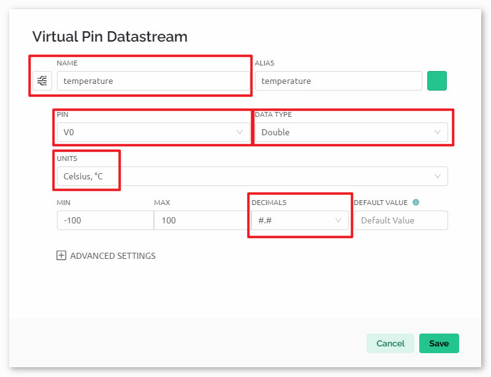
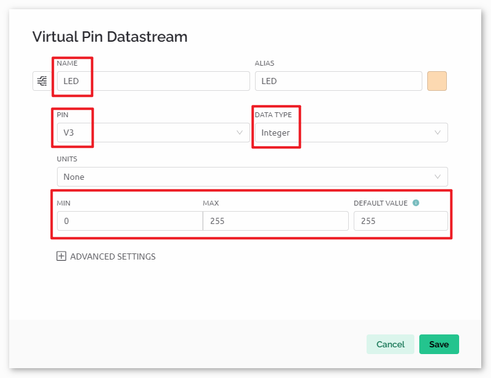

Bemerkung
Hallo und willkommen in der SunFounder Raspberry Pi & Arduino & ESP32 Enthusiasten-Gemeinschaft auf Facebook! Tauchen Sie tiefer ein in die Welt von Raspberry Pi, Arduino und ESP32 mit anderen Enthusiasten.
Warum beitreten?
Expertenunterstützung: Lösen Sie Nachverkaufsprobleme und technische Herausforderungen mit Hilfe unserer Gemeinschaft und unseres Teams.
Lernen & Teilen: Tauschen Sie Tipps und Anleitungen aus, um Ihre Fähigkeiten zu verbessern.
Exklusive Vorschauen: Erhalten Sie frühzeitigen Zugang zu neuen Produktankündigungen und exklusiven Einblicken.
Spezialrabatte: Genießen Sie exklusive Rabatte auf unsere neuesten Produkte.
Festliche Aktionen und Gewinnspiele: Nehmen Sie an Gewinnspielen und Feiertagsaktionen teil.
👉 Sind Sie bereit, mit uns zu erkunden und zu erschaffen? Klicken Sie auf [hier] und treten Sie heute bei!
Pflanzenüberwachung mit Blynk
Dieses Projekt realisiert ein Demonstrations-System zur Pflanzenüberwachung, das aktuelle Temperatur, Luftfeuchtigkeit, Lichtintensität und Bodenfeuchtigkeit erfasst. Die Daten werden anschließend in Blynk angezeigt, ergänzt durch Vorschläge, die sich an den Feuchtigkeitswerten des Bodens orientieren.
1. Schaltung aufbauen
Bemerkung
Das ESP8266-Modul benötigt einen hohen Stromfluss, um stabil zu funktionieren. Stellen Sie daher sicher, dass die 9V-Batterie angeschlossen ist.
Das Kit kann verschiedene Versionen des DHT11-Moduls enthalten. Bitte bestätigen Sie die Verkabelungsmethode entsprechend dem Modul, das Sie haben.


2. Blynk konfigurieren
Bemerkung
Wenn Sie mit Blynk noch nicht vertraut sind, empfehlen wir dringend, zuerst diese beiden Anleitungen zu lesen. Einführung in Blynk ist ein Einsteigerleitfaden für Blynk, der auch die Konfiguration von ESP8266 und die Registrierung bei Blynk enthält. Flammenwarnsystem mit Blynk ist ein einfaches Beispiel, aber die Beschreibung der Schritte ist detaillierter.
2.1 Vorlage erstellen
Zunächst müssen wir eine Vorlage in Blynk erstellen. Erstellen Sie eine Vorlage namens „Pflanzenüberwachung“.
2.2 Datenstrom
Erstellen Sie Datastreams vom Typ Virtual Pin auf der Datastreams-Seite, um Daten von ESP8266 und Uno R4 zu empfangen.
Erstellen Sie den Virtual Pin V0 gemäß folgendem Schema:
Benennen Sie den Virtual Pin V0 in temperature um. Setzen Sie den DATA TYPE auf Double und MIN und MAX auf -100 und 100. Setzen Sie die UNITS auf Celsius,℃.

Erstellen Sie den Virtual Pin V1 gemäß folgendem Schema:
Benennen Sie den Virtual Pin V1 in humidity um. Setzen Sie den DATA TYPE auf Double und MIN und MAX auf 0 und 100. Setzen Sie die UNITS auf Percentage,%.

Erstellen Sie den Virtual Pin V2 gemäß folgendem Schema:
Benennen Sie den Virtual Pin V2 in soilMoisture um. Setzen Sie den DATENTYP auf String.

Erstellen Sie den Virtual Pin V3 gemäß folgendem Schema:
Benennen Sie den Virtual Pin V3 in LED um. Setzen Sie den DATA TYPE auf Integer und MIN und MAX auf 0 und 255.



2.3 Web-Dashboard
Wir müssen auch das Web-Dashboard konfigurieren, um mit der Pflanzenüberwachung interagieren zu können.
Konfigurieren Sie das Web-Dashboard gemäß dem folgenden Schema. Wir verwenden Widgets wie Beschriftungen, Anzeigen, LEDs und Diagramme. Achten Sie darauf, jedes Widget an seinen entsprechenden virtuellen Pin zu binden.

2.4 Vorlage speichern
Vergessen Sie nicht, die Vorlage am Ende zu speichern.
3. Code ausführen
Öffnen Sie die Datei
03-Plant_monitor.inoim Pfadultimate-sensor-kit\iot_project\wifi\03-Plant_monitoroder kopieren Sie den Code in die Arduino IDE.Erstellen Sie ein Blynk-Gerät mit der Vorlage „Pflanzenüberwachung“. Ersetzen Sie dann die Werte für
BLYNK_TEMPLATE_ID,BLYNK_TEMPLATE_NAMEundBLYNK_AUTH_TOKENdurch Ihre eigenen.#define BLYNK_TEMPLATE_ID "TMPxxxxxxx" #define BLYNK_TEMPLATE_NAME "Plant Monitor" #define BLYNK_AUTH_TOKEN "xxxxxxxxxxxxx"
Geben Sie ebenfalls die
ssidund dasPasswortdes genutzten WLANs ein.char ssid[] = "Ihr_SSID"; char pass[] = "Ihr_Passwort";
Nach der Auswahl des korrekten Boards und Ports klicken Sie auf den Hochladen-Button.
Öffnen Sie den Seriellen Monitor (Baudrate auf 115200 einstellen) und warten Sie auf eine Erfolgsmeldung zur Verbindung.

Bemerkung
Falls die Meldung
ESP is not respondingerscheint, gehen Sie bitte wie folgt vor:Stellen Sie sicher, dass die 9V-Batterie angeschlossen ist.
Setzen Sie das ESP8266-Modul zurück, indem Sie den RST-Pin für eine Sekunde auf GND legen und dann wieder entfernen.
Drücken Sie den Reset-Knopf auf dem R4-Board.
Manchmal müssen Sie die obigen Schritte 3-5 Mal wiederholen. Bitte haben Sie Geduld.
4. Code-Erklärung
Initialisierung von Bibliotheken und Definition von Konstanten:
Dieser Codeabschnitt beinhaltet die benötigten Bibliotheken und definiert bestimmte Konstanten, wie die Blynk-Vorlageninformationen und WLAN-Zugangsdaten.
#define BLYNK_TEMPLATE_ID "TMPLxxxxxxx" #define BLYNK_TEMPLATE_NAME "Pflanzenüberwachung" #define BLYNK_AUTH_TOKEN "xxxxxxxxxxx" #define BLYNK_PRINT Serial #include <ESP8266_Lib.h> #include <BlynkSimpleShieldEsp8266.h> char ssid[] = "Ihr_SSID"; char pass[] = "Ihr_Passwort"; #include <SoftwareSerial.h> SoftwareSerial EspSerial(2, 3); #define ESP8266_BAUD 115200 ESP8266 wifi(&EspSerial);
Einrichten des DHT-Sensors:
Der DHT-Sensor wird initialisiert und relevante Variablen zur Speicherung von Temperatur und Luftfeuchtigkeit festgelegt.
#include <DHT.h> #define DHTPIN 8 #define DHTTYPE DHT11 DHT dht(DHTPIN, DHTTYPE); float temperature; float humidity;
Einrichten des Bodenfeuchtesensors:
Konfiguration des Bodenfeuchtesensors. Grenzwerte für nasse und trockene Bedingungen werden festgelegt.
Sie müssen Ihre eigenen Werte für
wetSoilunddrySoilgemäß Ihrer konkreten Situation ermitteln. Messen Sie den Wert des Bodenfeuchtemoduls alsdrySoil, wenn der Boden trocken ist, und den Wert innerhalb eines geeigneten Bereichs, den Sie als am feuchtesten betrachten (jenseits dieses Bereichs wäre zu nass), alswetSoil.#define wetSoil 320 #define drySoil 400 const int moistureSensorPin = A0; int moisture; String soilStatus;
Timer-Einrichtung:
Ein Timer wird konfiguriert, der die Häufigkeit der Datenerfassung und -aktualisierung steuert.
BlynkTimer timer;
Initialisierung in der Setup-Funktion:
In diesem Abschnitt wird die serielle Kommunikation eingerichtet, das ESP8266 für das WLAN konfiguriert und der DHT-Sensor gestartet.
Mit
timer.setInterval(5000L, myTimerEvent)wird das Timer-Intervall in der Setup()-Funktion festgelegt. Hier haben wir es so eingestellt, dass die FunktionmyTimerEvent()alle 5000 ms ausgeführt wird. Sie können den ersten Parameter vontimer.setInterval(1000L, myTimerEvent)ändern, um das Intervall zwischen denmyTimerEvent-Ausführungen zu ändern.
void setup() { Serial.begin(115200); EspSerial.begin(ESP8266_BAUD); delay(10); Blynk.config(wifi, BLYNK_AUTH_TOKEN); Blynk.connectWiFi(ssid, pass); timer.setInterval(5000L, myTimerEvent); dht.begin(); }
loop()-Funktion:
Die Hauptschleife führt den Blynk-Prozess und den Timer aus.
void loop() { Blynk.run(); timer.run(); }
sendData()-Funktion:
Diese Funktion liest Werte vom DHT- und Bodenfeuchtesensor, bestimmt den Zustand des Bodens und sendet die Daten an die Blynk-App.
Verwenden Sie
Blynk.virtualWrite(vPin, value)um Daten an virtuelle Pins in Blynk zu senden. Siehe dazu Blynk.virtualWrite() .Verwenden Sie
Blynk.setProperty(V3, "color", color)um die Farbe der LED in Blynk einzustellen. Weitere Details finden Sie unter Blynk - LED .
void sendData() { // (code for reading and determining values) Blynk.virtualWrite(V0, temperature); Blynk.virtualWrite(V1, humidity); Blynk.virtualWrite(V2, soilStatus); Blynk.virtualWrite(V3, 255); // set blynk LED brightness Blynk.setProperty(V3, "color", color); // set blynk LED color }
Daten auf Serial Monitor ausgeben:
Diese Funktion ist nützlich für Debugging-Zwecke und zur lokalen Überprüfung der Messwerte im seriellen Monitor der Arduino IDE.
void printData() { // (Code zur Ausgabe der Werte auf den Serial Monitor) }
Referenzen